Qui trovi la mappa essenziale di chi si è schierato. Non è un elenco completo: serve solo a capire, in modo rapido, quali partiti, associazioni e comitati stanno principalmente nel campo del SÌ e quali nel campo del NO.
Come leggere questa pagina
Partiti politici Associazioni e ordini Comitati di campagna Figure pubbliche note
Attenzione: “chi dice SÌ” o “chi dice NO” non significa che tutte le persone di quell’area la pensino allo stesso modo. In alcuni casi c’è una posizione ufficiale; in altri ci sono comitati, appelli o figure pubbliche che si espongono personalmente.
1. La mappa politica, in modo molto semplice
Guardando ai partiti nazionali, il quadro è abbastanza leggibile: il SÌ è sostenuto dai partiti della maggioranza di governo e da alcune forze liberali o centriste; il NO dai principali partiti dell’opposizione progressista. Ci sono poi alcuni casi meno netti, con libertà di voto o posizioni meno marcate.
Partiti più chiaramente per il SÌ
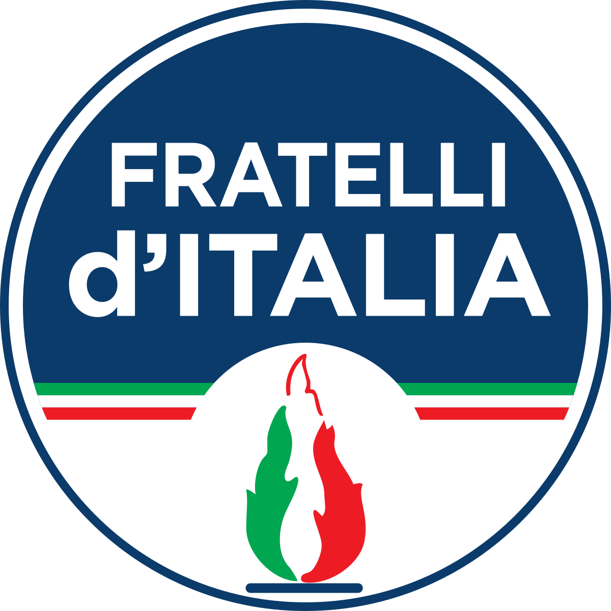
Fratelli d’ItaliaPartito della presidente del Consiglio, nel fronte del SÌ.
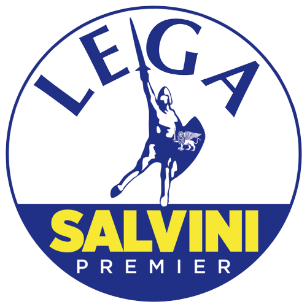
LegaSchierata a favore della riforma.
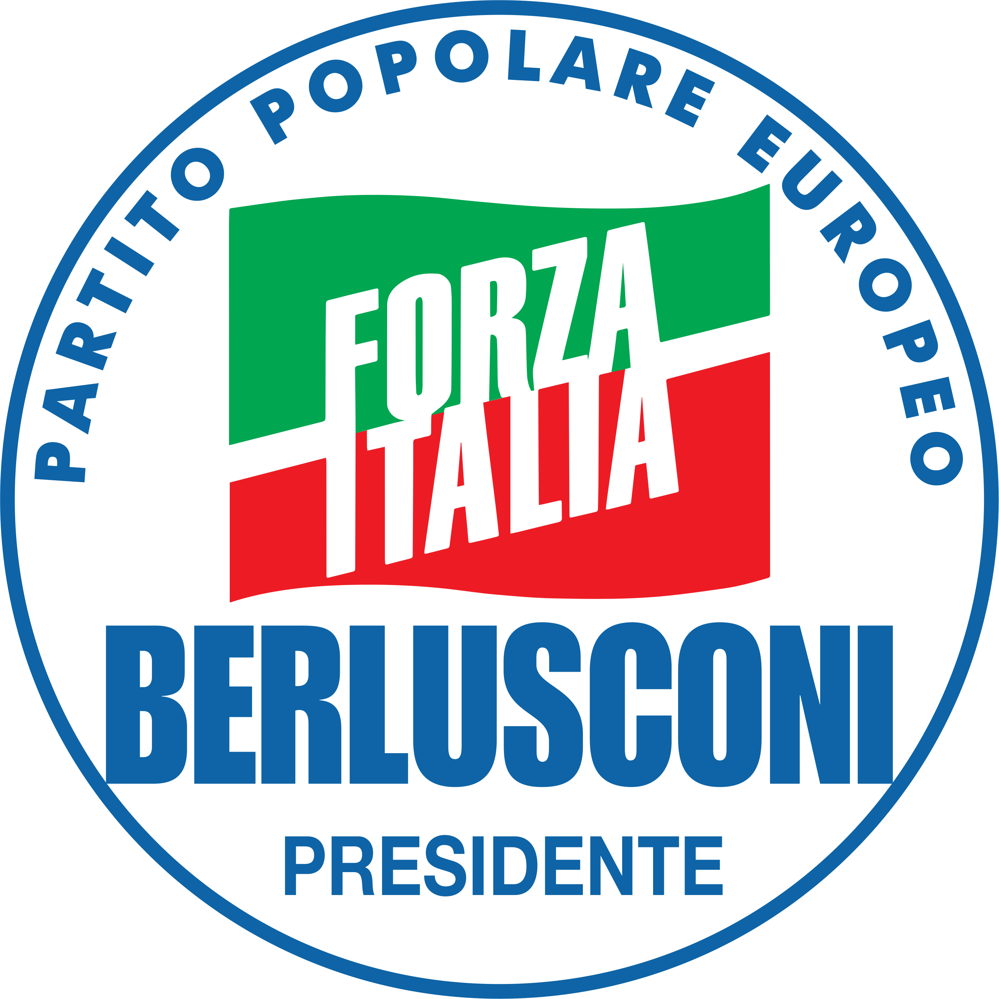
Forza ItaliaStoricamente favorevole alla separazione delle carriere.
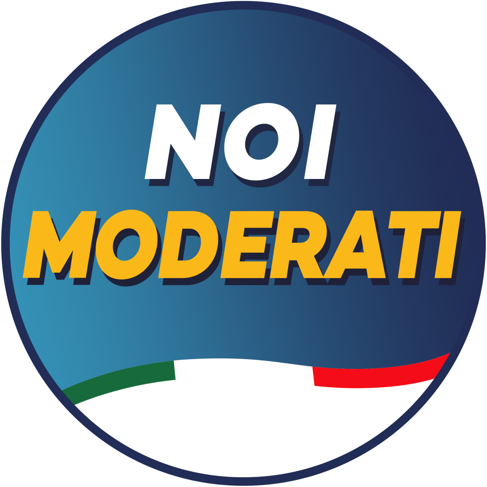
Noi ModeratiDentro il fronte del SÌ insieme alla maggioranza.
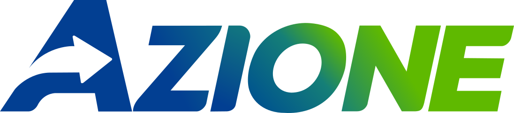
AzioneTra le opposizioni, è una delle forze che sostiene il SÌ.
+EuropaFavorevole alla riforma e al SÌ.
Partiti più chiaramente per il NO
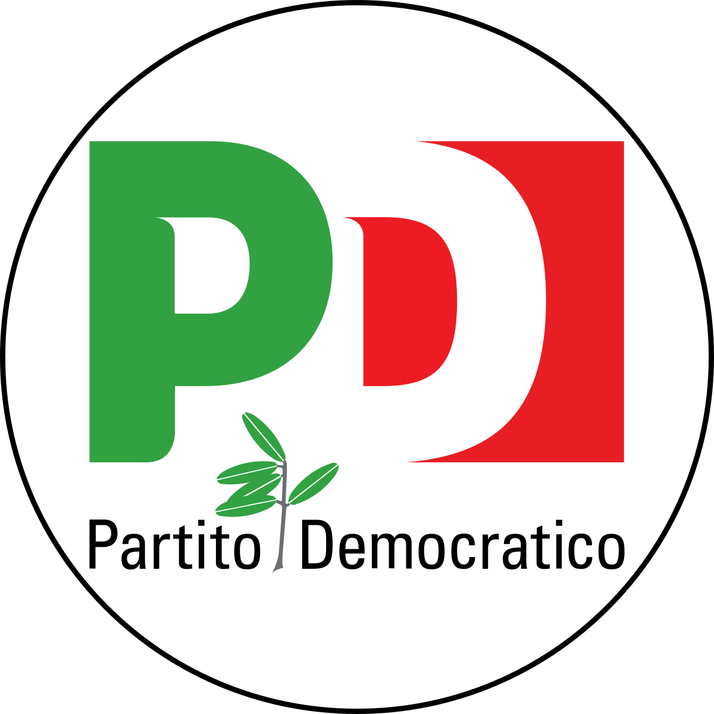
Partito DemocraticoHa impostato la sua campagna sul NO.
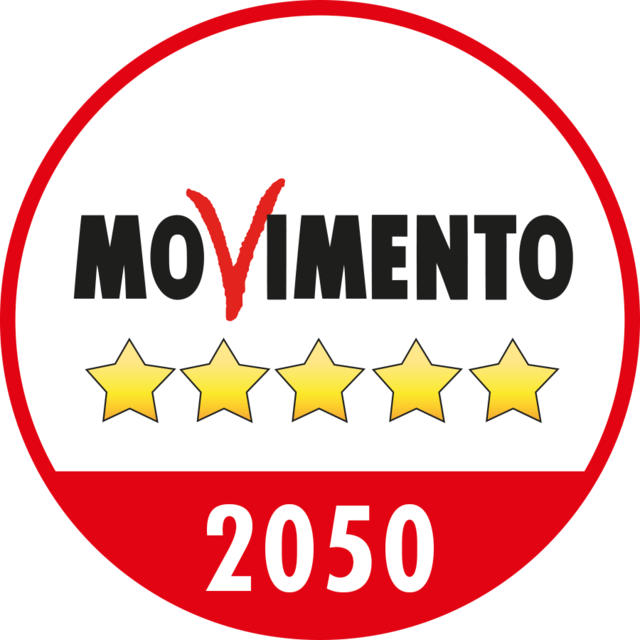
Movimento 5 StelleSchierato contro la riforma.
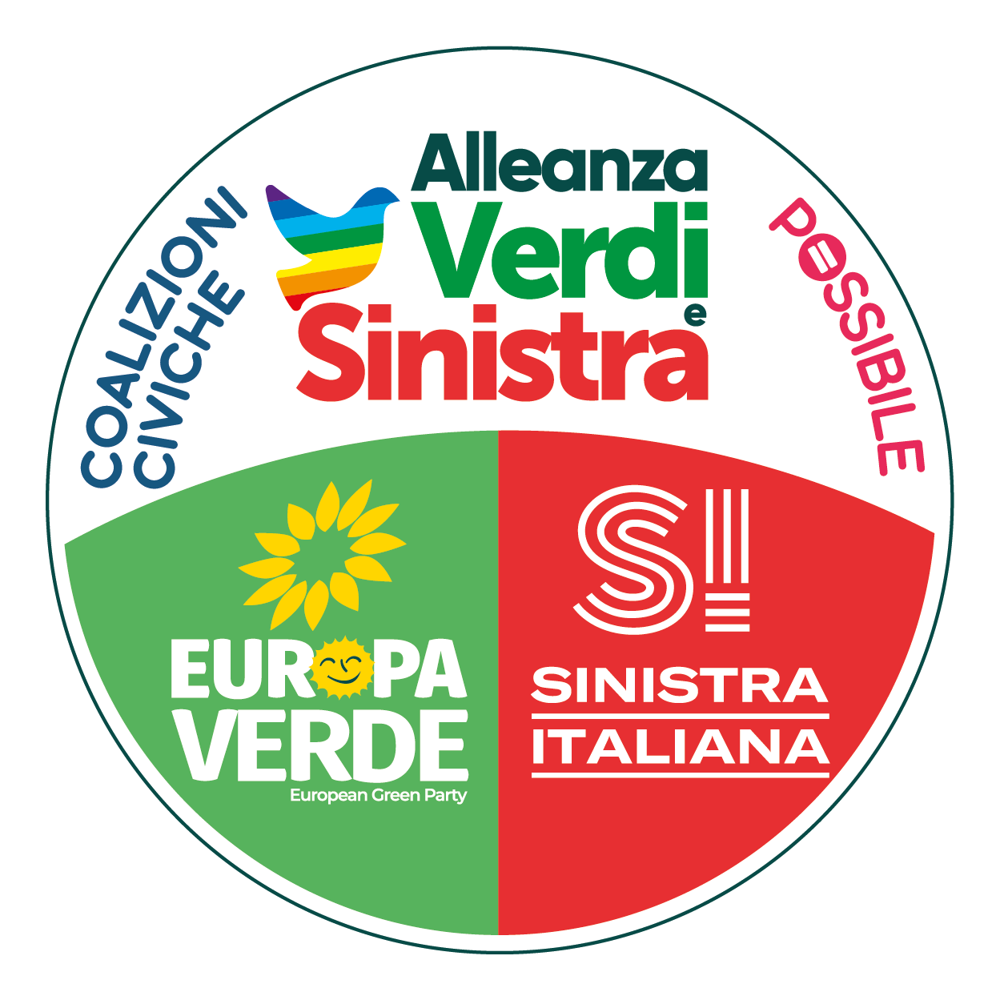
Alleanza Verdi e SinistraNel fronte del NO insieme all’area progressista.
Casi meno lineari
Italia Viva: posizione non unitaria e libertà di voto.
SVP: libertà di voto.
Esistono poi partiti minori o liste civiche schierati su uno dei due fronti, ma per orientarsi i nomi sopra bastano già.
Tradotto: se si guarda solo ai partiti più visibili, il referendum divide abbastanza nettamente centrodestra di governo e opposizione progressista, ma non in modo perfettamente simmetrico.
2. Anche associazioni e organizzazioni si sono schierate
Questa pagina si capisce meglio se non ci si ferma ai partiti. Sul referendum si sono mossi anche organismi professionali, associazioni civiche e realtà del terzo settore. È importante, perché il voto riguarda magistratura, avvocatura e regole costituzionali.
Nel fronte del SÌ si vedono soprattutto
Consiglio Nazionale ForenseTra i soggetti più citati del mondo forense favorevoli al SÌ.
Unione Camere PenaliUno dei riferimenti più visibili della campagna per il SÌ.
Fondazione Luigi EinaudiPresente nell’area liberal-garantista favorevole alla riforma.
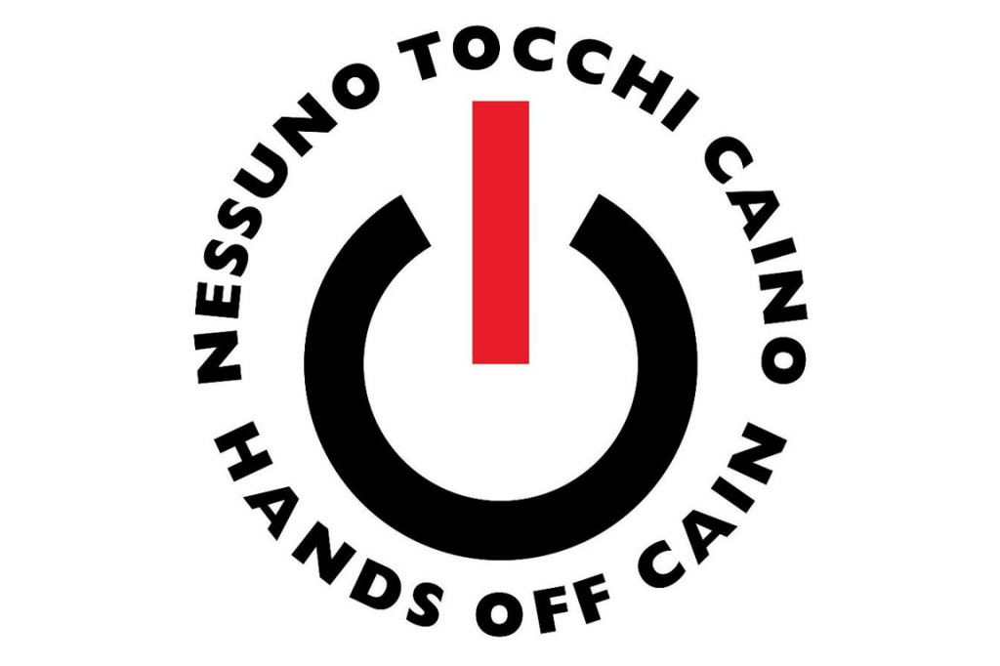
Nessuno tocchi CainoTra le realtà civiche più chiaramente nel campo del SÌ.
Tra i nomi più riconoscibili del fronte favorevole compaiono anche Nicolò Zanon e Gian Domenico Caiazza, legati a comitati e iniziative per il SÌ.
Nel fronte del NO si vedono soprattutto
Associazione Nazionale MagistratiLa principale associazione dei magistrati ha promosso il NO.
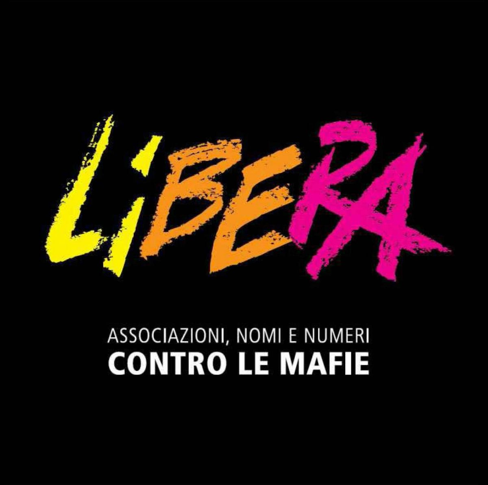
LiberaTra i promotori del comitato della società civile per il NO.
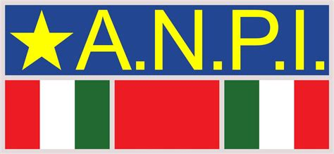
ANPIPresente nel fronte associativo contrario alla riforma.
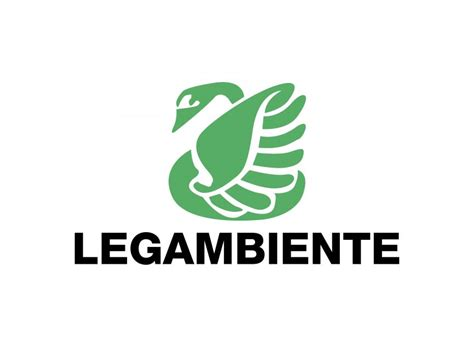
LegambienteIndicata tra le realtà che sostengono il NO.
Tra i volti più citati del fronte contrario compaiono Giovanni Bachelet, Enrico Grosso e, sul piano più pubblico, anche Gustavo Zagrebelsky.
Un indizio utile
Molte organizzazioni dell’avvocatura stanno nel SÌ. L’ANM e diverse realtà civiche e sociali stanno nel NO.
Perché conta
Ti aiuta a capire che il referendum divide non solo i partiti, ma anche categorie professionali e pezzi della società civile.
Da non fraintendere
Non significa che tutti gli avvocati o tutti i magistrati la pensino allo stesso modo: significa solo che alcune organizzazioni ufficiali hanno preso posizione.
3. I comitati: chi fa campagna davvero
Oltre ai partiti e alle associazioni, la campagna si muove attraverso comitati. Non serve elencarli tutti: basta ricordare i più visibili a livello nazionale, perché sono quelli che hanno dato un volto pubblico ai due fronti.
Comitati più visibili per il SÌ
Sì Riforma
Sì Separa
Comitato Camere Penali per il SÌ
Comitato Giuliano Vassalli per il SÌ
Popolari per il SÌ
Comitati più visibili per il NO
Giusto dire NO
Avvocati per il NO
Società civile per il NO nel referendum costituzionale
Comitato dei 15 cittadini
La chiave per leggere bene questa pagina: qui non conta avere un elenco infinito di nomi. Conta capire che il SÌ raccoglie soprattutto maggioranza di governo, area liberal-garantista e una parte importante dell’avvocatura organizzata; il NO raccoglie soprattutto opposizione progressista, ANM e molte realtà civiche e associative.
4. La domanda che molti si fanno: magistrati e avvocati stanno da parti opposte?
In modo molto semplificato, spesso sì, ma non va scritto in modo assoluto. La formula più corretta è questa:
una parte importante dell’avvocatura organizzata sostiene il SÌ;
l’Associazione Nazionale Magistrati sostiene il NO;
esistono però anche magistrati per il SÌ e avvocati per il NO.
La formulazione più corretta: non “i magistrati sono contro” o “gli avvocati sono a favore”, ma “alcune delle principali organizzazioni rappresentative si sono schierate così, senza coincidere con l’intera categoria”.